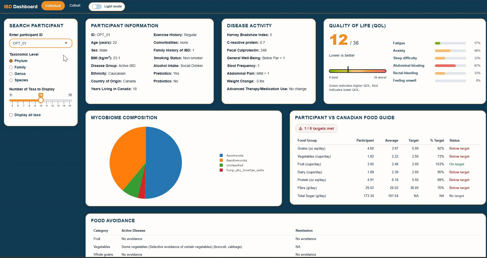
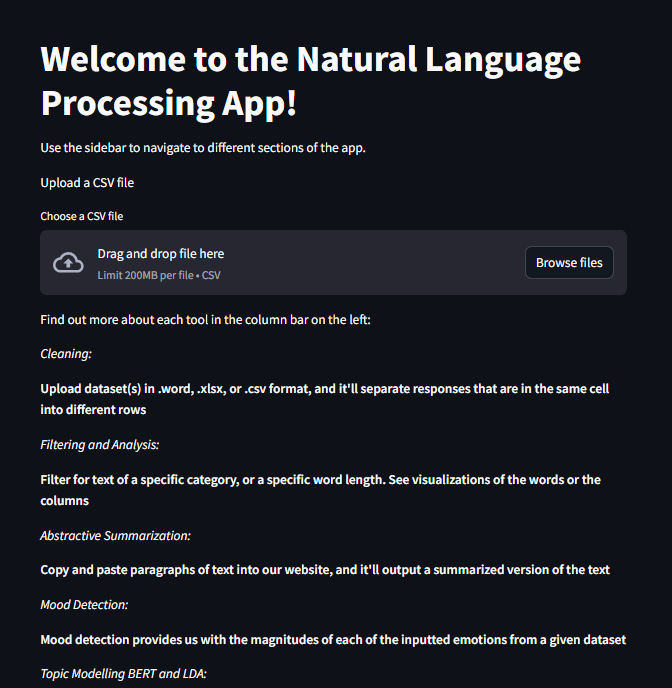
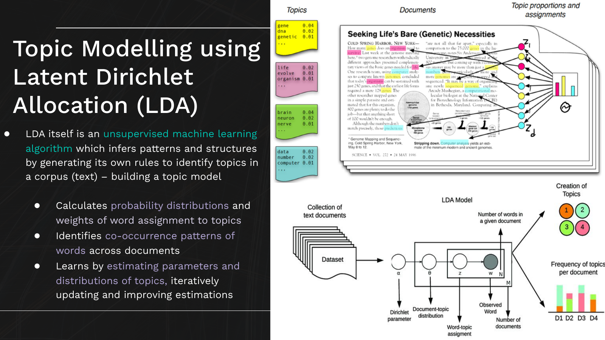

Selected work
Projects
Data products, research, and machine learning work designed to make complex information more useful.

View case study
A reproducible pipeline and dashboard that bring clinical, dietary, biomarker, and mycobiome data together for IBD research.

View case study
An interactive Streamlit app that makes text cleaning, linguistic analysis, sentiment, and topic modelling accessible to non-technical users.

View case study
Latent Dirichlet Allocation applied to ICU-survivor transcripts to surface challenges that may contribute to unplanned readmission.
View case study
An unsupervised machine learning pipeline that highlights unusual patterns in publicly disclosed U.S. Senate transactions.